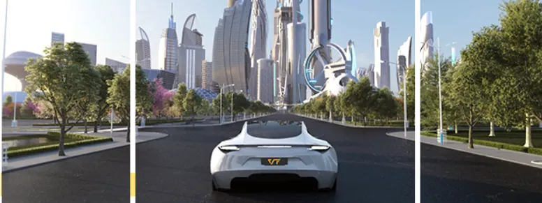
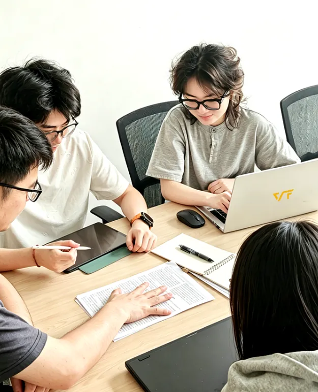
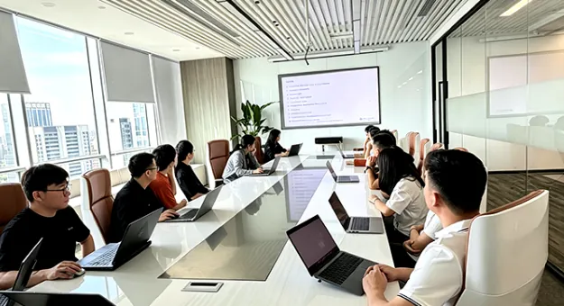
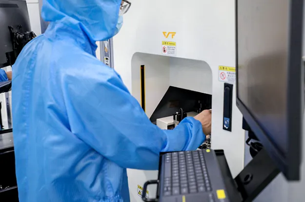
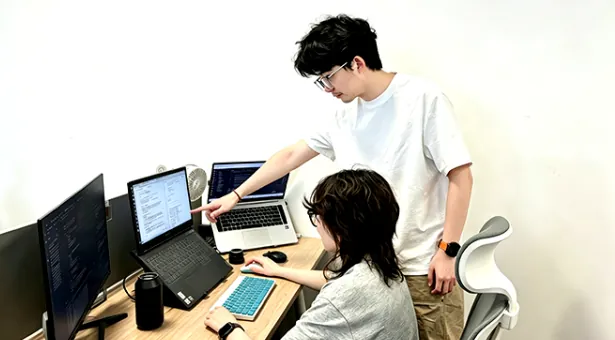
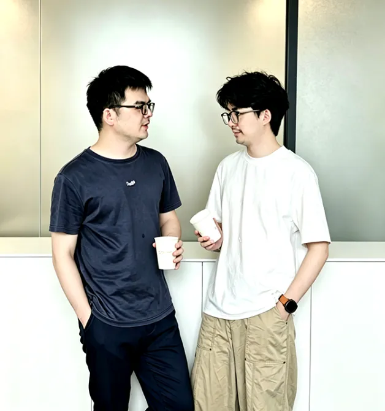
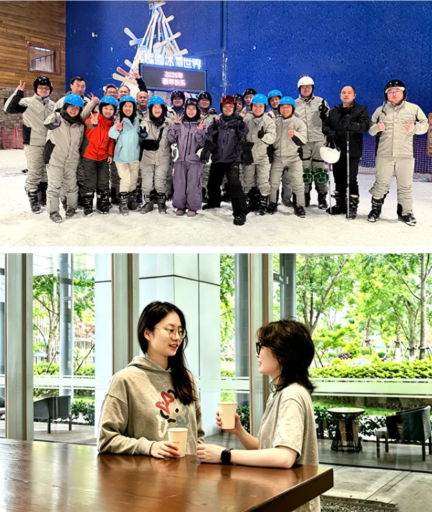
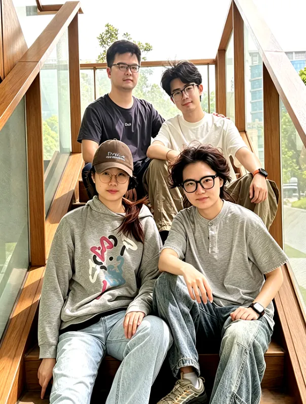

在寅家
我們因為熱愛相聚
因為共同的目標，彼此相惜
我們朝夕相伴、共赴長遠
520，讓我們道出一句
“有你同行，真好”
（至2026年5月，寅家集團大家庭共有400+名員工，研發人員佔比接近三分之一）

/攻堅時刻，我們是並肩作戰的戰友/
面對技術攻關與項目節點的重重挑戰
有人深耕技術底層
有人統籌全局推進，有人補位兜底堅守
在一次次研討碰撞、通宵攻堅中
把複雜課題逐一攻克，把每一個節點穩穩落地



/成長路上，我們是彼此引路的夥伴/
前輩傾囊相授，新人向上求索
有人分享經驗、有人給予鼓勵
在交流中精進專業，在陪伴中共同成長
讓每一位寅家人都能在前行路上不孤單、有力量


/閒暇時刻，我們是溫暖相伴的家人/
團建活動中，我們卸下工作忙碌
在互動中增進默契，在陪伴中加深情誼
那些並肩奮鬥的時光、彼此陪伴的溫暖
已成為我們心中珍貴的回憶
也成為團隊長久前行的底氣

看見每一個個體，凝聚每一份微光
我們銘記每一位寅家人的付出
讓每一位寅家人都能在這裡安心紮根、向陽生長

520，讓我們彼此感謝
在寅家這個溫暖的港灣
全力以赴，並肩同行